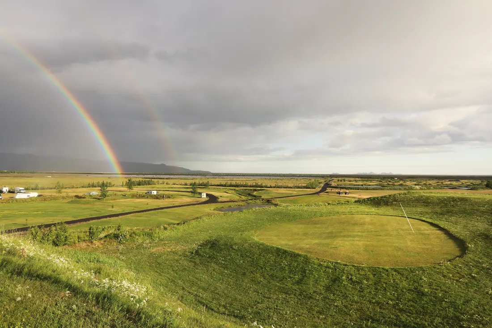
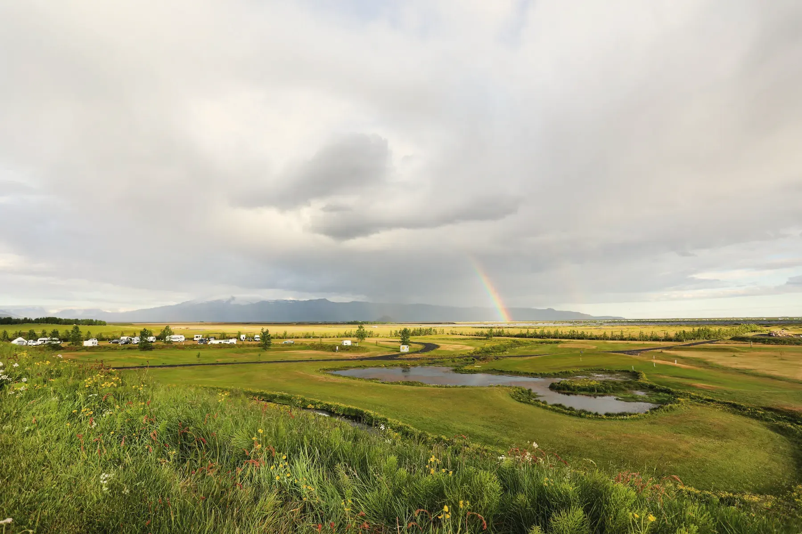
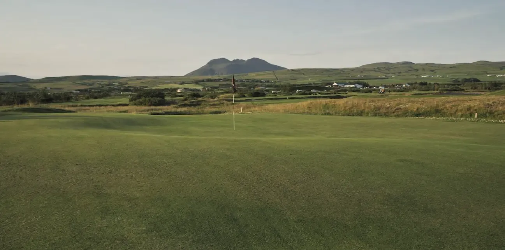
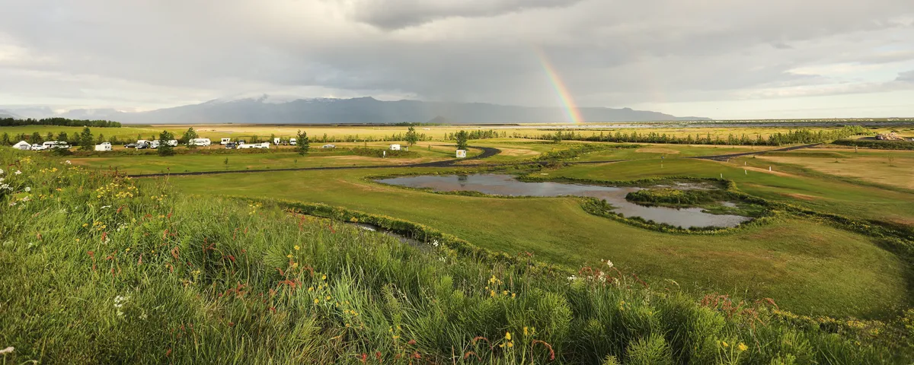

Þverárvöllur, níu holur á Hellishólum
Tvær ár renna um brautirnar. Golfklúbburinn Þverá rekur völlinn.
Krefjandi og skemmtilegur
Golfklúbburinn Þverá, aðili að Golfsambandi Íslands, rekur völlinn. Leigðu kylfur og golfbíl, hitaðu upp á æfingasvæðinu eða spilaðu pitch & putt völlinn.
- Holur
- 9
- Par
- 72
- Lengd
- 5.206 m
- Leiga
- Kylfur og golfbílar



- Tjaldsvæðiðopið allt árið
- Þverárvöllurníu holur
Þverárvöllur
Níu holur niður að Þverá. Þverárvöllur liggur meðfram Þverá og Grjótá. Golfklúbburinn Þverá rekur völlinn. Kylfur og golfbílar til leigu, æfingasvæði og púttflöt.
Kort af svæðinuGolf og gisting
Gistu og spilaðu um morguninn. Biddu móttökuna um golfpakka fyrir hópinn.